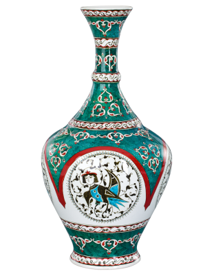

|
|
|

Çini Vazolarkil, kaolin, tebeşir ve kuvars gibi ham maddeler karıştırılarak hazırlanmış hamurun şekillendirilmesi, kurutulması, pişirilmesi, dekorlanması, sırlanması ve sırlı bünyenin pişirilmesi ile oluşan vazo biçimi verilmiş bir sanat ürünüdür. |
Çini Tablolarseramik ve porselenin hammaddesi olan kaolen, kum, alçı ve kuvarsın ateşle kaynaştırılıp sırlanmasıyla elde edilen, geometrik formlar, hayvan, bitki, çiçek gibi çini motifleri ile şekillendirilen, Türk mimarisinde, geleneksel dekorasyonlarda sıkça kullanılan tasarım ürünlerin tamamına verilen isimdir. |
Çini Tabaklargeleneksel el sanatları ve estetik tasarımın zarif bir birleşimini temsil eder. Genellikle seramik veya porselen malzemeden yapılan bu tabaklar, el yapımı detaylar, zengin renk paletleri ve özenle işlenmiş desenleriyle dikkat çeker. Çini tabaklar genellikle kültürel motifleri, bölgesel sanat tarzlarını veya tarihi öğeleri yansıtarak, bir bölgenin veya kültürün sanat mirasını taşırlar. Estetik açıdan çeşitli ve özgün olan bu tabaklar, genellikle ev dekorasyonunda, koleksiyonlarda veya sanat eserleri olarak değerlendirilir ve geleneksel el işçiliğinin güzellik ve özenini sergiler. |

Selçuklu KoleksiyonuSelçuklu devleti birçok mimari yapıda çini sanatını kullanmıştır. Genellikle dini yapılar da mozaik çini tekniğini kullanan Selçuklu sanatçıları günümüze kadar özenle gelen hediyelik çini olarak kullanılabilen mükemmel işler ortaya koymuşlardır. Mozaik çini tekniğinde mor, firuze, yeşil ve lacivert renkte sırlanan çinilerin mevcut örneğe göre kesilmiş parçalarının alçı bir zemin üzerinde bir araya getirilmesidir. Aynı zamanda, Selçuklu saraylarında kullanılan diğer farklı stiller ise yıldız, kare ve haçvari gibi farklı stillerdir. |
Kony a Çini ile
|

|
|
PolitikalarGizlilik Politikasıİade Politikası Çerez Politikası Kargo ve Gönderim Politikası Kullanım Şartları |
Daha fazla hava durumu tahmini: 30 gunluk hava durumu Ankara
|